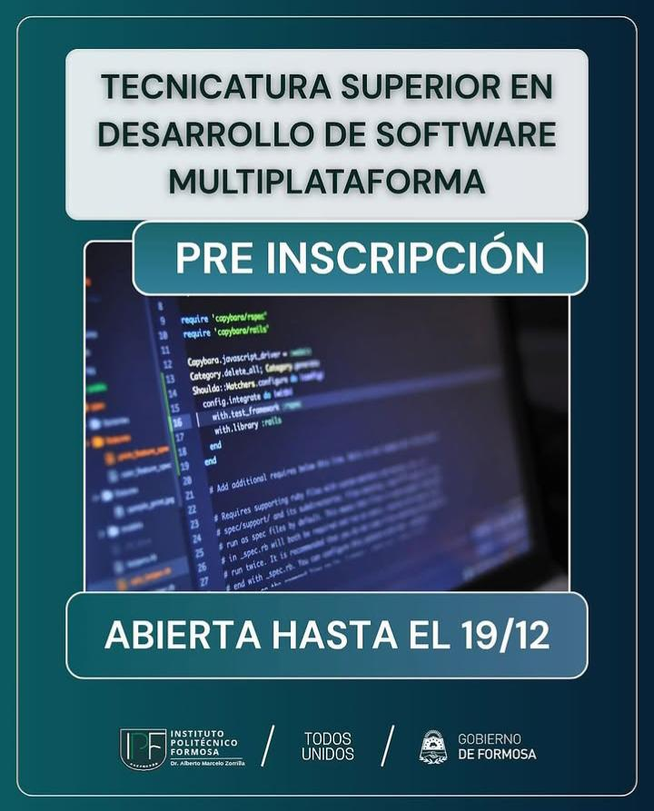
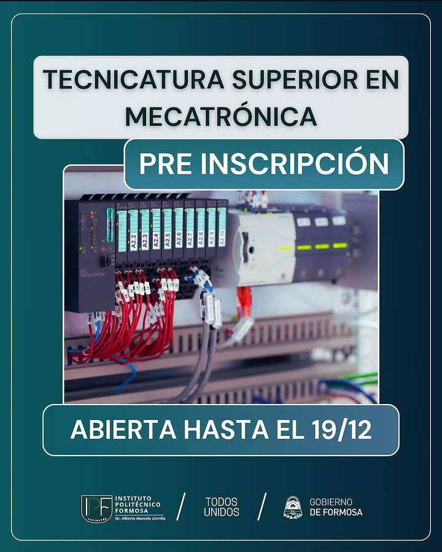
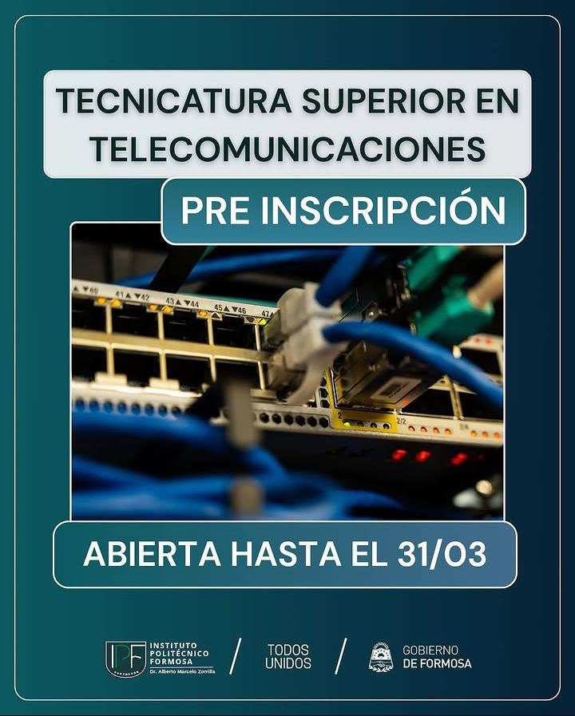

Descripción: Capacita en el desarrollo de software para diversas plataformas, abarcando programación, diseño y mantenimiento de aplicaciones.
Duración: 2 años.
Requisitos de inscripción: Título secundario completo o constancia en trámite; mayores de 25 años sin título pueden ingresar aplicando la Ley 24.521; aprobar el cursillo de nivelación y el examen de ingreso.

Descripción: Forma técnicos capaces de desarrollar, mantener y optimizar sistemas mecatrónicos, integrando mecánica, electrónica e informática.
Duración: 3 años.
Requisitos de inscripción: Título secundario completo o constancia en trámite; mayores de 25 años sin título pueden ingresar aplicando la Ley 24.521; aprobar el cursillo de nivelación y el examen de ingreso.
Descripción: Capacita en procesos químicos industriales, control de calidad y gestión ambiental.
Duración: 2 años y medio.
Requisitos de inscripción: Título secundario completo o constancia en trámite; mayores de 25 años sin título pueden ingresar aplicando la Ley 24.521; aprobar el cursillo de nivelación y el examen de ingreso.

Descripción: Forma técnicos en sistemas de telecomunicaciones, redes y transmisión de datos.
Duración: 2 años y medio.
Requisitos de inscripción: Título secundario completo o constancia en trámite; mayores de 25 años sin título pueden ingresar aplicando la Ley 24.521; aprobar el cursillo de nivelación y el examen de ingreso.
© 2026. Todos los derechos reservados.